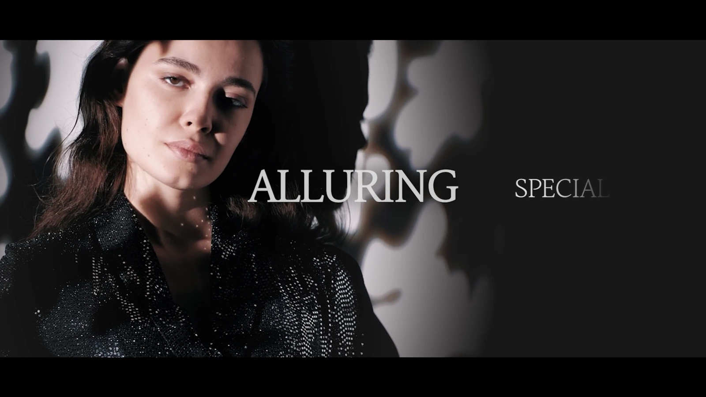
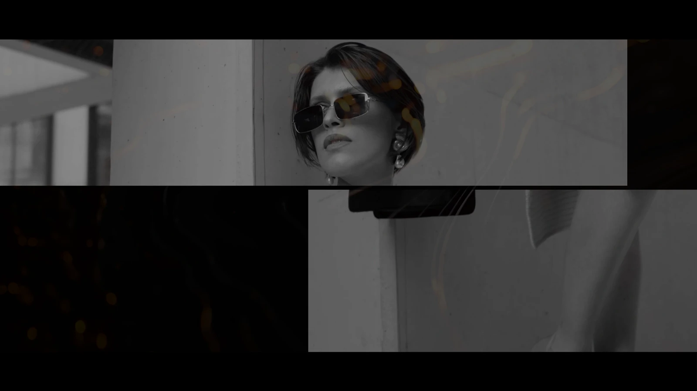
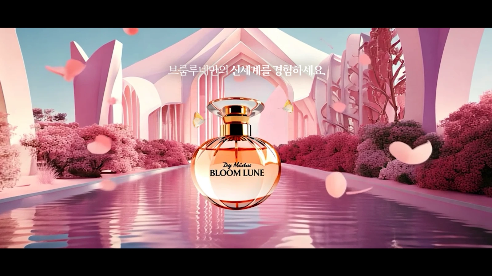

← Video
EDITING / CONTENT DESIGN / PERSONAL PROJECT
BLOOM LUNE.
Visual Editing & AI Scenes
패션·제품·텍스처 소스를 골라 향수 브랜드의 무드를 구성했습니다. 타이틀과 화면 전환을 디자인하고, 일부 장면에 AI 영상을 결합했습니다.
BLOOM LUNE / 01:02영상 파일 열기 ↗
- MY ROLE
- 소스 선택·구성 · 타이틀 디자인 · 편집 · AI 장면
- TOOLS USED
- Premiere Pro · Photoshop · Illustrator · Runway
- SOURCE SCOPE
- 기존 소스 활용 + 직접 디자인·편집
EDITING & DESIGN
컷을 고르고,
화면을 구성합니다.
각 화면의 역할에 맞춰 이미지와 타이포그래피를 배치했습니다.



브랜드의 무드를 하나의 스타일로 연출하다.
스톡 영상과 이미지에서 필요한 소스를 골라 브랜드 무드를 구성했습니다. 타이틀과 화면 전환을 디자인하고 일부 제품 장면에 AI 영상을 결합했습니다. 촬영이 아닌 소스 구성·디자인·편집 중심의 작업입니다.
CONTINUE EXPLORING